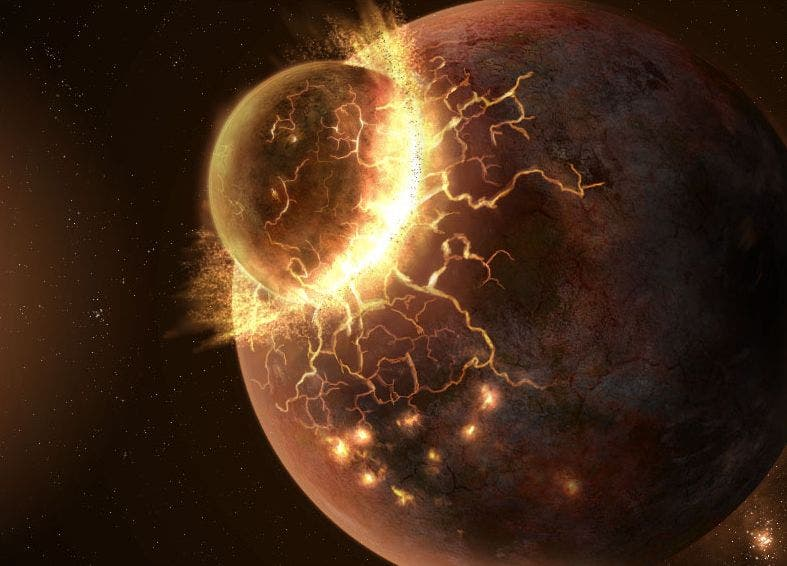

4.6 Milyar Yıl - 4 Milyar Yıl Önce
Hadean, yeryüzünün ilk oluşmaya başladığı başlangıç evresidir. Uluslararası Stratigrafi Komisyonu tarafından 4,6 milyar yıl öncesinden başlatılan bu dönem, ismini Yunan mitolojisindeki yeraltı tanrısı Hades’ten alır. Bu isimlendirme, dönemin aşırı volkanik etkinlikleri, eriyik haldeki yerkabuğu ve yoğun gök taşı bombardımanları nedeniyle kutsal kitaplardaki "cehennem" tasvirini andırmasından kaynaklanmaktadır.

Genç Dünya ile proto-gezegen Theia'nın çarpışması ve Ay'ın kopan parçalardan oluşum süreci.